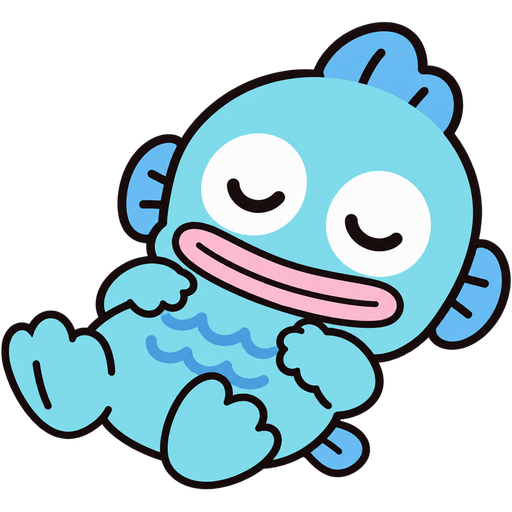
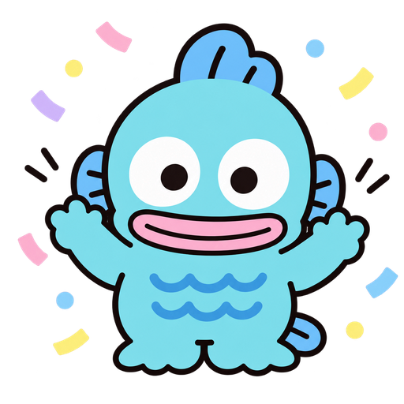
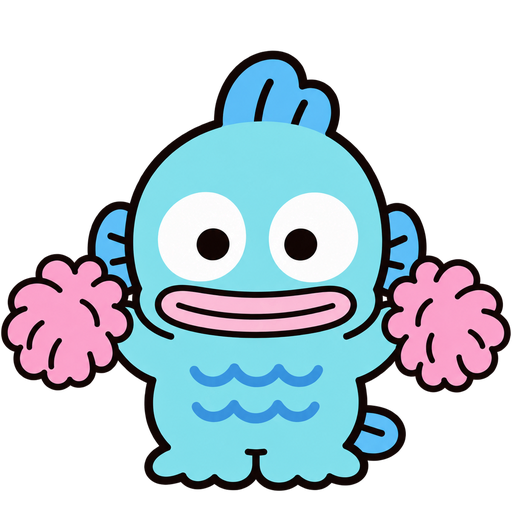

まずは ホーム画面に ついか してね
やることリスト！は アプリにして つかうよ。
この 画面では つかえないの。
この 画面では つかえないの。
ながおし して うごかすと、ならびかえ できるよ

やることは なにもないよ〜
のんびりしよ！
のんびりしよ！

きょうも えらい！
0
きょう
0
こんしゅう
0
ぜんぶ

まだ ないよ。
ひとつ できたら ここに たまるよ！
ひとつ できたら ここに たまるよ！
できたリストを ぜんぶ ごみばこへ うつす？（ごみばこから いつでも もどせるよ）
バックアップ
やることは この スマホに じどうで ほぞんされているよ。スマホを かえるときの ために、ときどき「メモ」アプリに おくっておいてね。（出てきた ならびから「メモ」を えらぶよ）
バックアップから もどす
メモに おくった もじを ぜんぶ コピーして、下に はりつけてね。いまの やることは けさずに、たりない ものだけ もどすよ。
ごみばこ
けしたものは ここに 90日 とっておくよ。
ごみばこの中身を ぜんぶ けす？ これは もどせないよ。
ほぞんの じょうたい
- さいごの ほぞん
- —
- ほぞん
- —
くわしく
- やること
- 0こ
- できた
- 0こ
- ごみばこ
- 0こ
- ひかえの ほぞん
- —
- どこから ひらいた？
- —
- バージョン